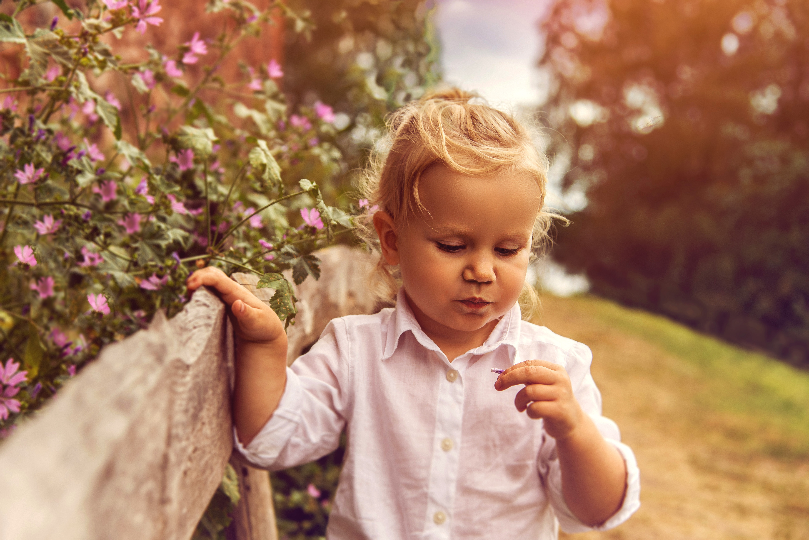
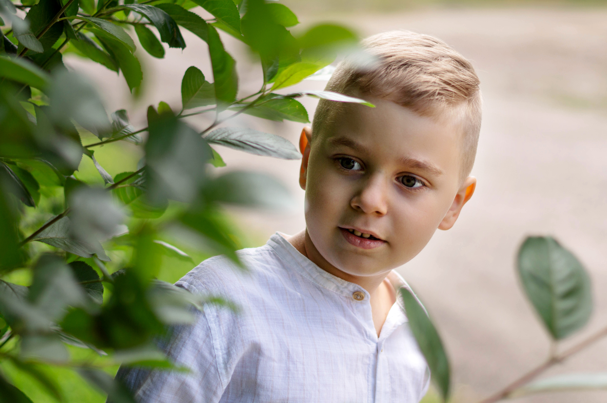

Moje sesje fotograficzne dziecięce są zaprojektowane tak, aby uwiecznić piękno i radość dzieciństwa w autentyczny sposób. Każda sesja jest wyjątkowa i dostosowana do potrzeb oraz osobowości dziecka, jednak istnieją pewne elementy, które są charakterystyczne dla naszych usług.
Konsultacja przed sesją:
rozpoczęciem sesji przeprowadzamy krótką konsultację z rodzicami, aby poznać preferencje dotyczące stylu sesji, wybór lokalizacji oraz określić oczekiwania co do zdjęć. Jest to również doskonała okazja do omówienia wszelkich pytań i wątpliwości związanych z przebiegiem sesji.




Dzieciństwo to najpiękniejszy ze wszystkich krajobrazów, który możemy uchwycić na fotografii.
- Andy Warhol